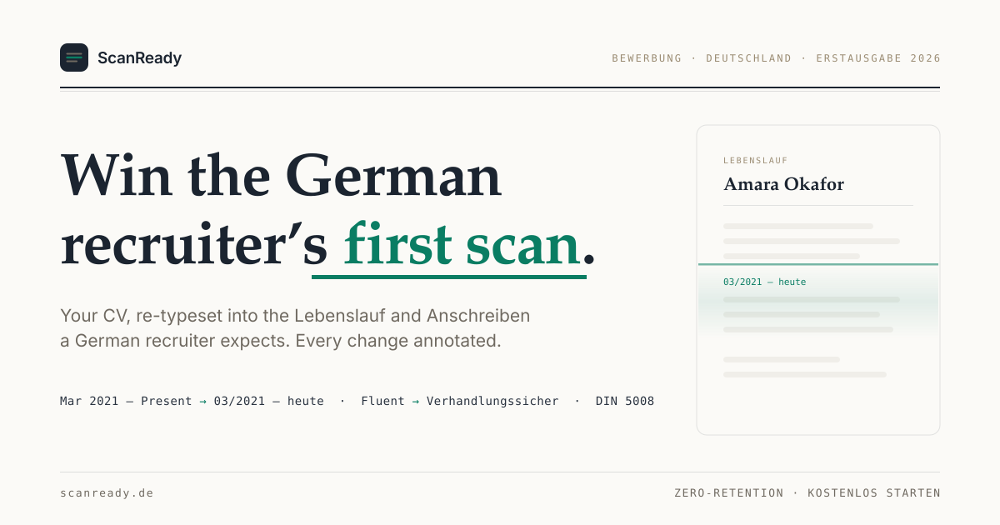

1a
Wordmark lockups
The scan-line mark: two grey lines being read, the green one already typeset.
Rules: the middle line is always the green one (the typeset line). Never recolor, never rotate, never place the navy tile on navy without the hairline stroke (the dark variant carries it). Wordmark set in Inter semibold, tracking -0.4; do not re-set in the serif.
1b
OG / social image · 1200×630
Broadsheet front page: masthead, headline, one scanning sheet. Export to PNG for og:image.

File: assets/og-scanready.svg. Headline stays legible at 200px-wide previews; the scan light is frozen mid-sweep (static asset, inherently reduced-motion-safe). Type uses system stacks so the SVG renders identically without webfont loading; rasterize at 2x for the final og:image PNG.
1c
404 · the misprint
A newspaper correction notice. Misregistered plates, static offset, no animation.
The joke is typographic: the numeral prints three times, terracotta and green plates off-register behind the ink plate, like a misprinted broadsheet. Static offsets only, nothing moves; the Berichtigung box borrows the newspaper correction format and reassures in the product’s own terms (nothing stored, nothing lost). EN copy in the deck below.
1d
Favicon refresh
The mark, simplified for 16px: brighter strokes, tighter radius.
64
32
16
File: assets/favicon.svg. At icon size the grey lines brighten to the on-dark ramp and the green line lifts one step for contrast against the navy tile; at lockup sizes the standard mark colors apply. Ship as SVG favicon + 32/16 PNG fallbacks.
1e
Copy deck · DE / EN
Key
DE
EN
notfound.eyebrow
Korrektur der Redaktion
A correction from the editors
notfound.h1
Diese Seite ist beim Umbruch verrutscht.
This page slipped during typesetting.
notfound.correction
Berichtigung: Die angeforderte Seite wurde nicht gesetzt oder existiert nicht mehr. Wir bitten, den Fehler zu entschuldigen. Ihr Lebenslauf ist davon nicht betroffen.
Correction: the requested page was never set, or no longer exists. We apologize for the error. Your Lebenslauf is unaffected.
notfound.footer
Fehlercode 404 · Nichts wurde gespeichert
Error code 404 · Nothing was stored